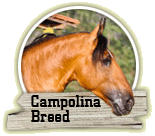

Conheça um pouco
da história do cavalo Campolina e seus personagens mais importantes.
Quer comprar um Campolina? Veja
alguns exemplares pré-disponibilizados
pelo Haras Luanda.
Garanhões na Nacional
Hamon da Hibipeba e Dimitri de Luanda sagra-ram-se Campeões Nacio-
nais em 2009.
[Leia +]
Receba as novidades do Haras Luanda!
Cadastro realizado
com sucesso!
O Haras Luanda é certificado pela Associação Brasileira dos Exportadores do Cavalo de Marcha como possuidor de marcha tipo exportação.
© Copyright 2009 - Haras Luanda. All rights reserved.